Пусть нам надо создать сборочный узел из деталей Основание и Крышка, соединённых между собой при помощи сварного шва. Начнём с создания 3D - модели детали Основание.
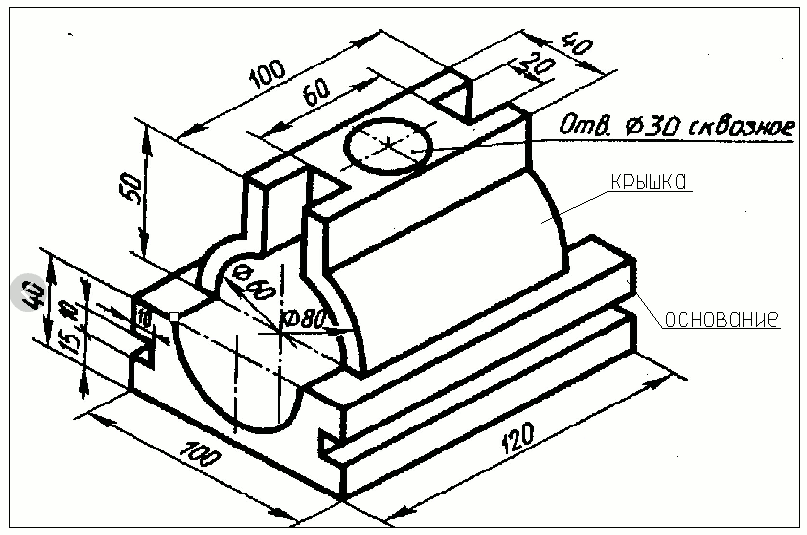
Заходим в пункт меню Создать и выберем Деталь (gost-part)
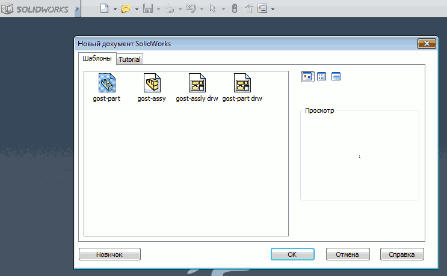
В открывшемся окне создадим эскиз. В качестве плоскости для создания эскиза выберем Вид спереди, щёлкнув левой кнопкой мыши по его обозначению в графическом окне.
Нарисуем окружность, используя команду Окружность по центру на панели инструментов и зададим ей радиус 30мм.
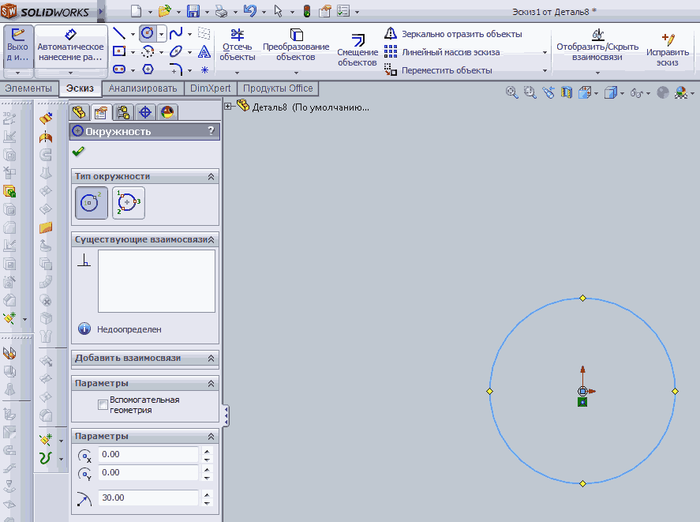
Построим опорные точки с одной стороны эскиза, испольэуя команду Точка и укажем размеры (команда Автоматическое нанесение размеров).
Соединим точки линиями (команда Линия).
Выполним отсечение лишних линий (команда Отсечь объекты).
Отсечение выполняется проходом курсором по отсекаемым линиям с нажатой левой кнопкой мыши.
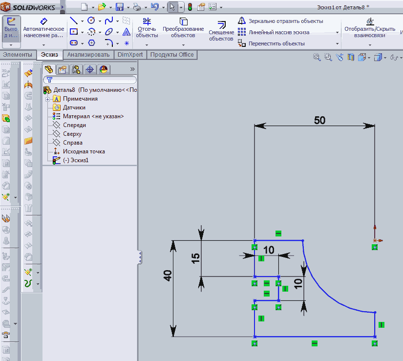
Зайдём в команду Зеркально отобразить объекты.
Укажем рамкой объекты для зеркального отображения и левой кнопкой мыши линию, относительно которой надо зеркалить объекты.Для завершения команды щелчёк по зелёной птичке или "Enter".
Щёлкните Выход из эскиза.
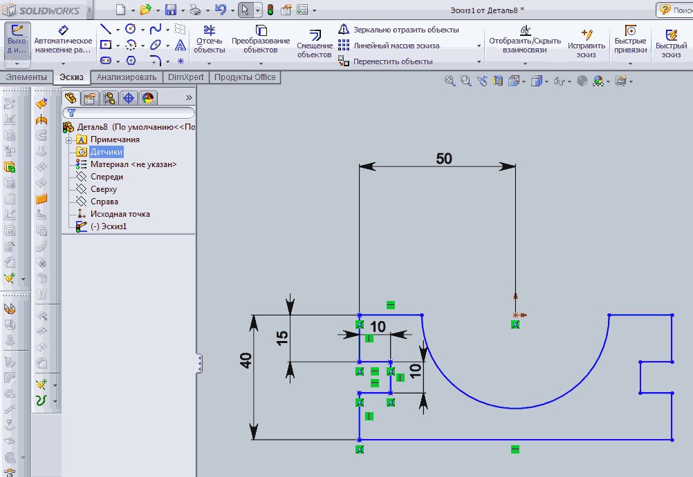
Нажмите клавишу Пробел и выберите ориентацию эскиза Изометрия.
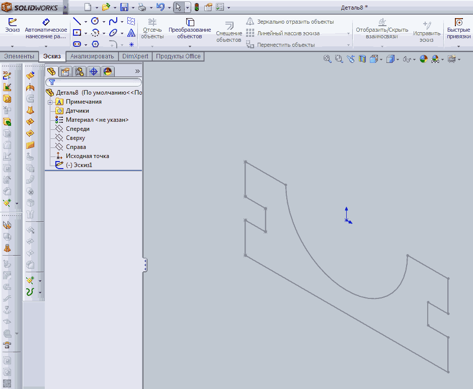
Выполним выдавливание эскиза в объёмное тело.
Заходим в закладку Элементы и выбираем команду Вытянутая бобышка/основание. Можно задать расстояние выдавливания 120мм в одном направлении или по 60мм в двух направлениях. Выберем второй вариант.
Зададим материал нашей детали.
Сделаем щелчёк правой кнопкой мыши по материалу в дереве модели и выберем Редактировать материал.
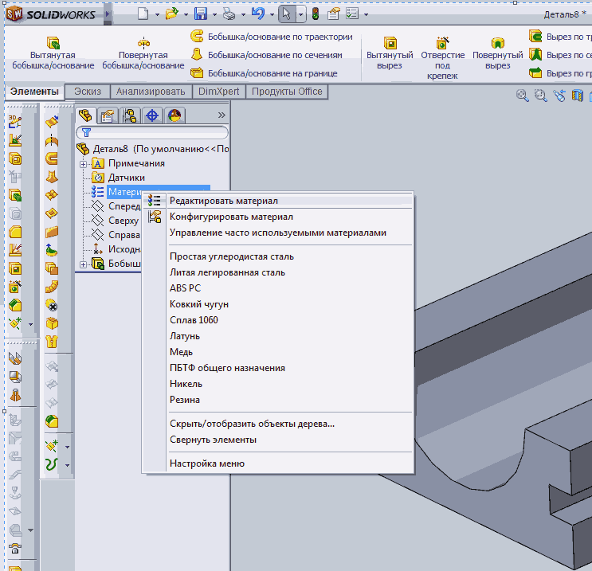
В открывшемся списке выберем материал детали. При необходимости можно отредактировать внешний вид материала.
Добавим отверстие в детали.
Для построения нового эскиза укажем нижнюю плоскость детали и выберем команду Эскиз.
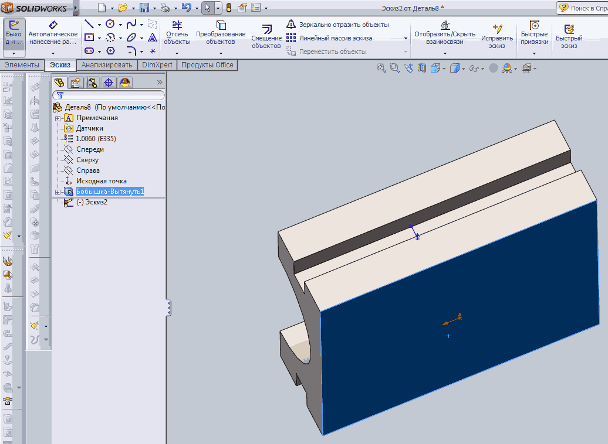
Начертим окружность радиусом 15мм в центре плоскости эскиза.
Выйдем из эскиза, зайдём в закладку Элементы, выберем команду
Вытянутый вырез. В качетве расстояния укажем Насквозь и щёлкнем по зелёной галочке вверху.
В результате получим 3D - модель детали.
Сохраним её под именем Основание.
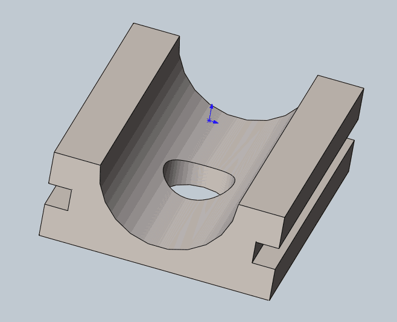
Создадим эскиз для верхней детали.
Используем команды Окружность, Прямоугольник из центра, Отсечение, Автоматическое нанесение размеров.
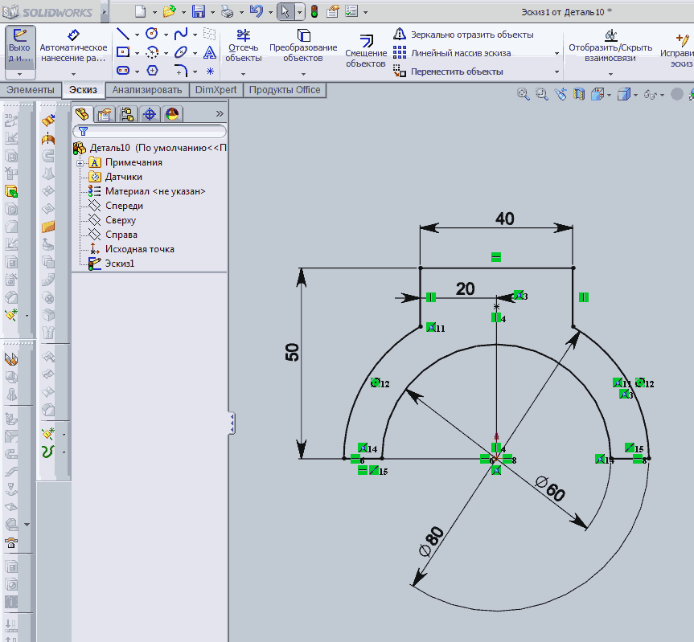
После выхода из эскиза выдавим полученный контур на 50мм в обе стороны. Элементы — Вытянутая бобышка/основание.
Создадим новый эскиз на верхней грани детали.
Построим окружность и два прямоугольника из центра. Укажем размеры.
Воспользуемся командой Вытянутый вырез для создания вырезов и отверстия.
В качестве расстояния укажем Насквозь.
Назначим материал для детали и сохраним её под именем Крышка
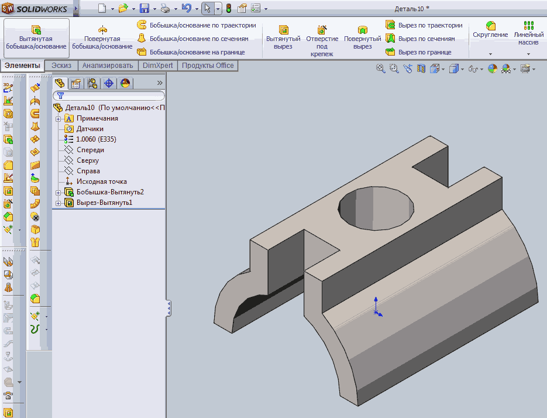